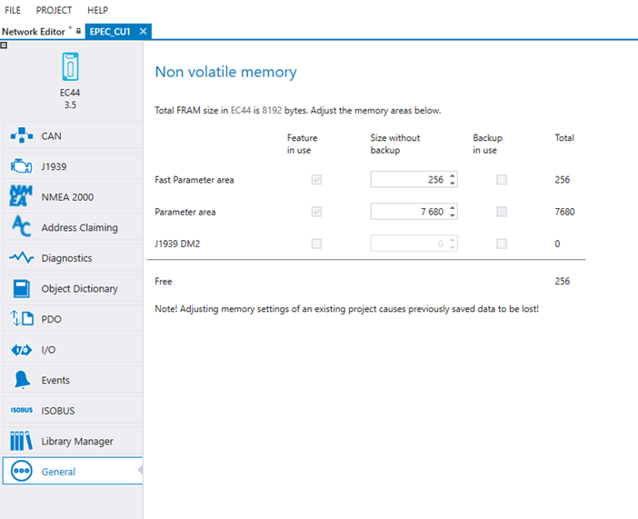

Adjusting memory settings of an existing project causes previously saved data to be lost.
This topic describes how to configure non-volatile memory areas. Memory area settings can be found from the General tab.
|
|
Adjusting memory settings of an existing project causes previously saved data to be lost. |

The available memory areas are product specific.
For example, the size of Fast Parameter area can be adjusted in the non-volatile settings. It is also possible to select if Fast Parameter area back up is in use.
Unallocated memory is also shown. A warning will appear if there is not enough space.